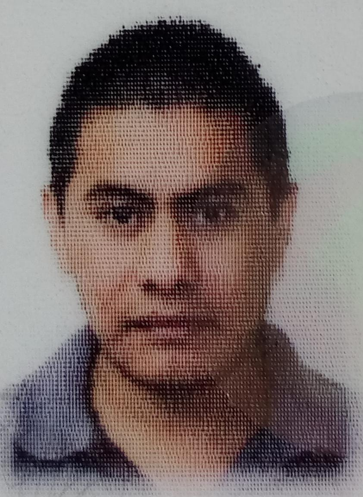

Educación
- Ingeniería Trunca en Comunicaciones y Electronica en Ingeniería mecánica y
eléctrica
- Instituto Politecnico Nacional - ESIME Zacatenco - Ciudad de México, CDMX
septiembre 1999 - julio 2004
- Tecnico en Redes de Computo en Informática
- Instituto Politecnico Nacional - CET 1 Walter Cross Buchanan - Ciudad de México, CDMX
septiembre 1996 - julio 1999

Experiencia Profesional
- AGENTE DE ATENCION TELEFONICA MULTISKILL
- Grupo Mexicano de Cable SA de CV-Ciudad de México, CDMX
junio 2011 - marzo 2024
- Atención Telefónica Soporte Técnico y Aclaración de Facturas.
- Orientación y soporte de uso de App Izzi y Cuenta en Portal Web.
- Generación de Reportes a Mesa de Ayuda. (Tickets en Remedy).
- Seguimiento a Quejas.
- Venta de Servicios Principales de Video/Teléfono/Internet.
- Venta de Complementos de Video (Netflix, Max, Disney+, Paramount, Complemento de Canales).
- Agente de Atencion Telefonica
- Teleperformance (PROPESA)-Naucalpan, Méx.
diciembre 2009 - abril 2010 (Centro de Atención a Socios Platino Aerolínea Aeroméxico)
- Atención e informacion general a clientes vía telefónica.
- Redención de Kilómetros Premier, ventas y reservaciones.
- Representante de Soporte Telefónico
- AMATECH S.A DE C.V-Ciudad de México, CDMX
mayo 2005 - mayo 2009 (Representante de Soporte Técnico Vía Telefónica Infinitum)
- Configuración de conexión a Internet.
- Configuración de Correo Electrónico.
- Pruebas de velocidad de conexión de red, antivirus.
- Representante Técnico Administrativo (Aerolínea Interjet)
- Atención e Información general a clientes, soporte en línea a través de portal web.
- Ventas y reservaciones.
Habilidades, conocimientos e idiomas
- Servicio al Cliente
- Conocimientos informáticos
- Administración del tiempo
- Habilidades de comunicación
- Tramitación de reclamaciones
- Habilidades organizativas
Dirección
Ecatepec, Méx. 55540
faustino.hdz@gmail.com
+525538987394